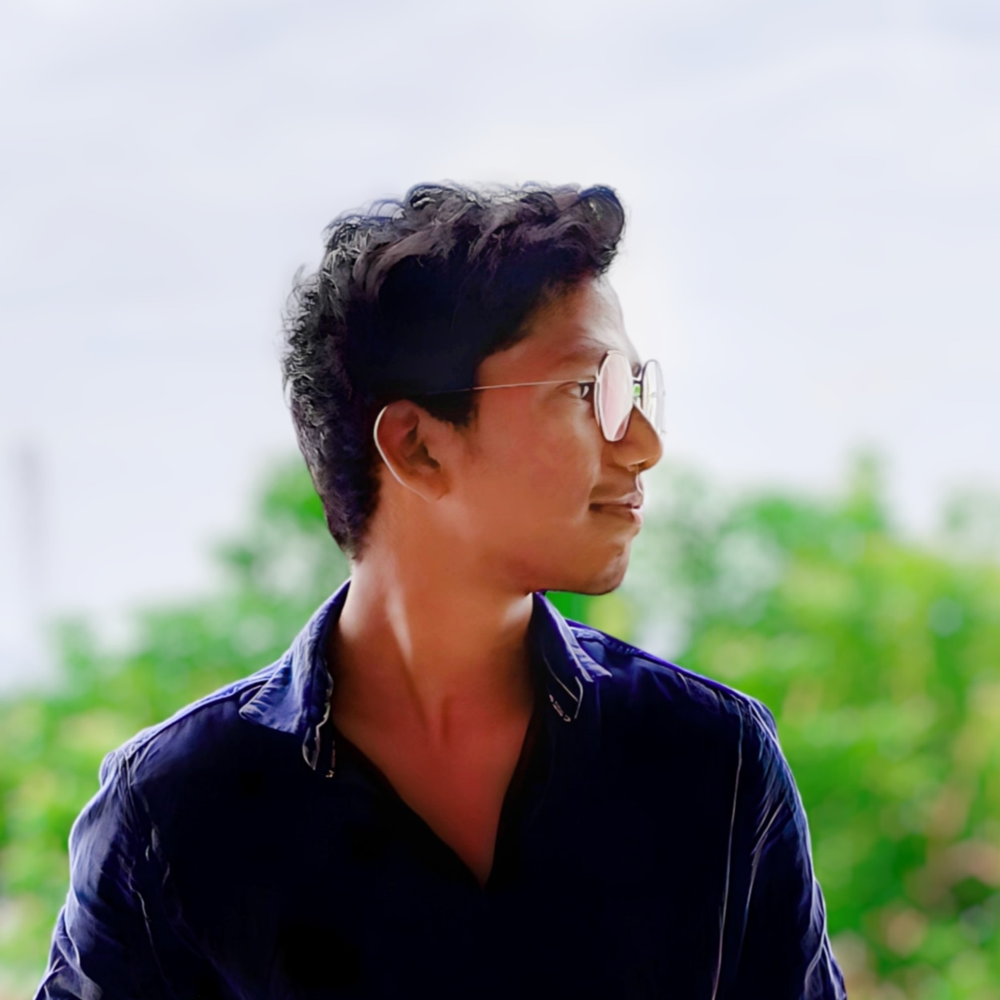

DOB: 14 July 2005
Email: mbalajims1@gmail.com
Phone: +91 7010475523
Location: Perambalur, Tamil Nadu
Career Objective
To pursue a challenging career and be part of a progressive organization that gives scope to enhance my knowledge and skills, and to reach the pinnacle in programming and development with sheer determination, dedication, and hard work.
Education
- B.Tech in Artificial Intelligence and Data Science – Paavai College of Engineering (CGPA: 7.54)
- HSC (2022): 77% – Swamy Vivekananda Matric Hr. Sec School
- SSLC (2020): 92.8% – Swamy Vivekananda Matric Hr. Sec School
Technical Skills
- Data Science
- Technical Languages
- Software Development
- Web Designing
- Cloud Computing
Projects & Certifications
- Emergency Ward Rush Prediction Using RNN – Published IEEE Paper at IIT Madhya Pradesh
- Telegram Bot in Python – Content creation & story development
- Brainstorm Buddy App – Tool for content idea validation
Internships & Workshops
- Web Development using PHP – Mercello Tech
- Career Guidance & Development – NIT
Soft Skills
- Communication
- Active Listening
- Problem-Solving
- Positive Attitude
Extra-Curricular Activities
- Poetry Writer
- Karate
- Content Creator